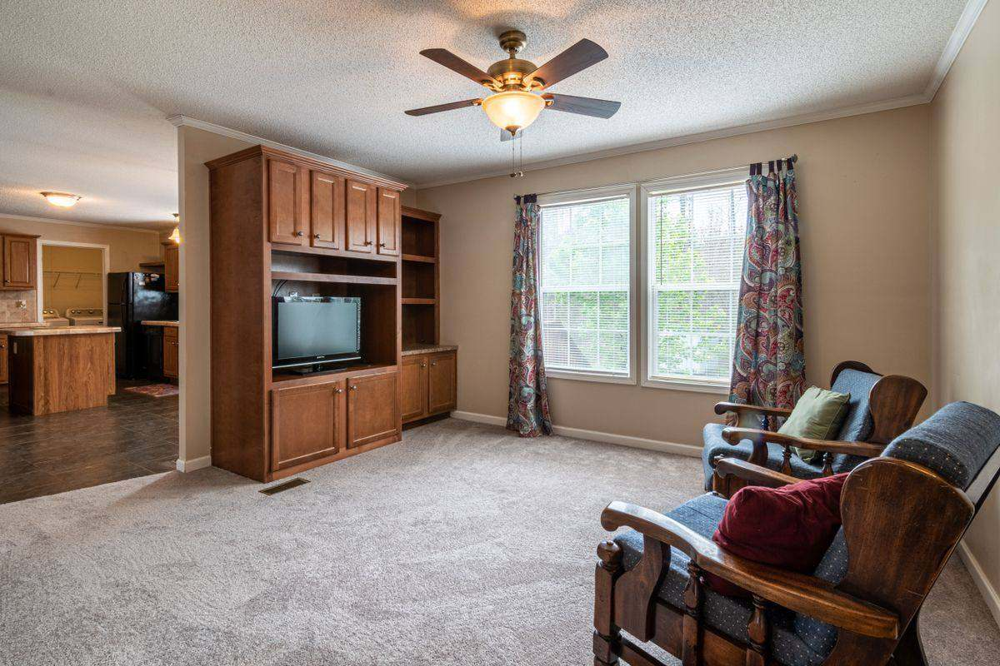

An old entertainment center or TV armoire usually has to go in pieces or through a wide path, and the tube TV inside it goes to electronics recycling, not the trash. Check whether a donation center will take the cabinet first. If not, a two-person crew can take the whole thing, TV included, out of the room in one visit.
These pieces were built around a television that no longer exists. A flat screen sits on the wall or on a low stand now, and the giant cabinet that used to hold a tube set is either empty, full of DVDs, or still holding the old TV because nobody could lift it out. We get called for this one a lot, usually when someone is repainting the living room or finally buying a sectional that needs the wall.
Why these pieces are so hard to get rid of
Three reasons, and most homes have all three.
First, the size. Wall units and TV armoires were built to hold a deep, heavy television, so they are tall, deep and wide. Many were assembled inside the room they sit in, which means they were never meant to leave through the door whole.
Second, the material. Plenty of the entertainment centers sold in the nineties and early two-thousands were particleboard with a laminate or veneer skin. That is heavy, and it does not take well to being taken apart and put back together. Screws that held for twenty years tend to strip the moment you back them out.
Third, the television. A tube TV is dense and awkward, with most of its weight at the front. It is the part of the job people most often leave for later, which is how a garage ends up with one sitting in the corner for years.
What comes apart and what does not
Before anyone lifts, look at how the piece is built. It decides the whole job.
- Modular wall units. Many are a center TV section with separate side towers and a bridge shelf across the top. Those usually lift apart into their sections, which makes the carry much easier.
- Assembled particleboard units. These can come apart, but they do not always survive it. If nobody plans to use it again, that is fine. If you were hoping to donate it, taking it apart can end that plan.
- Solid wood armoires. A one-piece hardwood armoire comes out whole or not at all. Doors come off, shelves come out, and after that the carcass has to fit the path.
Our post on old furniture removal goes deeper into the doorway and stairwell side of this. The short version: the path matters more than the weight.
Empty it before anyone lifts. Pull the DVDs, cables, game consoles and remotes out ahead of time, and unplug everything. A cabinet with loose things inside shifts during the carry, and a drawer that slides open on a staircase is how walls get dinged.
Where the cabinet can go
If the piece is solid and in good shape, check a donation route first. Habitat for Humanity ReStores accept donated furniture and home goods at many locations, but each store sets its own list, so call or check before you load a car.
Be ready for a no. Large entertainment centers built for tube TVs are hard for donation centers to place, because most people buying furniture now want something low and open for a flat screen. Solid wood armoires have a better shot, since they can work as a wardrobe or storage cabinet in a bedroom. We covered the donation side in more detail in the post on where to donate furniture in DFW.
If you have time and a curb, your city may take the cabinet as bulky trash. Plano runs a bulky waste collection program with its own rules for what goes out and when. The catch is getting the thing to the curb yourself, which is usually the whole problem.
Where the tube TV goes
Not in the trash. Televisions carry materials that belong in an electronics recycling stream, and the EPA's page on electronics donation and recycling explains why screens and circuit boards are handled separately.
Texas has its own rule on this. TCEQ's page on recycling computers and TVs explains that manufacturers of televisions sold in Texas are required to offer consumers a way to recycle them. If you want to handle the TV yourself, that is a real free route and worth checking before you pay anyone.
If you would rather not lift it, we take tube TVs and rear projection sets and route them to electronics recycling. Our post on appliance and electronics disposal in North Texas covers the rest of that category, from old monitors to the printer in the closet.
What we haul on an entertainment center job
The cabinet is usually not alone. On a typical living room clear-out, we take:
- the entertainment center, wall unit or TV armoire, in sections or whole
- the tube TV or rear projection set, plus old DVD players, VCRs and speakers
- the stack of DVDs and VHS tapes nobody has touched in a decade
- the recliner or loveseat that is leaving when the new sectional arrives
- a coffee table, end tables and the old rug under all of it
We handle the lifting and the carry, and we look at the path before anything moves. If a piece is not going to fit through a door whole, we tell you that up front and talk through how it comes apart. These are our own crews, not gig labor, which matters when the job is inside your living room.
If you are in Prosper, the notes on hauling heavy living room furniture out of a Prosper house cover how that usually runs there. Up near the lake, see how we handle a living room clear-out in Little Elm.
What stays behind
We do not take household hazardous waste. If the living room clear-out turns up old paint cans from the last time the room was painted, or a box of batteries and cleaning chemicals in the cabinet's bottom drawer, those go to your city's program instead. In Plano that is the household chemical collection service, and most DFW cities offer something similar at no charge.
How the pickup runs
Send us a photo of the entertainment center, the TV, and anything else leaving the room. Tell us if there are stairs.
A crew looks at what is going and gives you a firm number before anything is loaded. The quote is the bill, and disposal is included. We are affordable and priced fair, based on how much there is to take. Usable pieces go to local donation partners where they will take them, metal goes to a recycler, and electronics go to electronics recycling. Our stated goal is to keep more than half of every load out of the landfill.
Call before noon and same afternoon is typical across the northern suburbs. When you are ready, tell us what needs to go or read more about how our furniture removal works.
Frequently asked questions
Can you take the TV if it is still inside the cabinet?
Yes. We take the TV and the cabinet together. Leave the TV where it is, and we will lift it out and carry it separately so neither one gets dropped.
Do I need to take the entertainment center apart first?
No. Leave it as it is and we will decide on site whether it comes out whole or in sections. If you would rather not have it taken apart because you plan to donate it, tell us before we start.
Will a donation center take my old entertainment center?
Sometimes. Solid wood pieces in good shape have the best chance. Large units built for tube TVs are often turned down, so check with the store before you haul it there yourself.
Can you take a rear projection TV?
Yes. Rear projection sets are bulky and awkward to move, and they go to electronics recycling like any other television.
What if the unit is built into the wall?
If it is screwed into studs or trimmed into the wall, send us a photo first. We can tell you whether it is a quick removal or something to take up with a contractor.
The TV that piece was built for left years ago. The cabinet can follow it out in one visit.